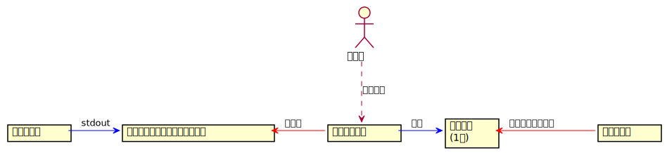
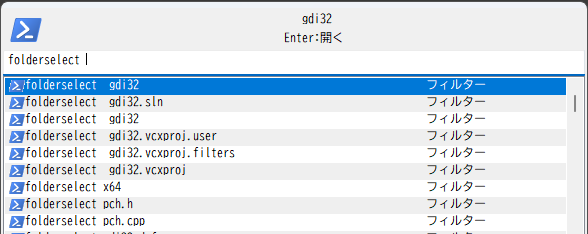
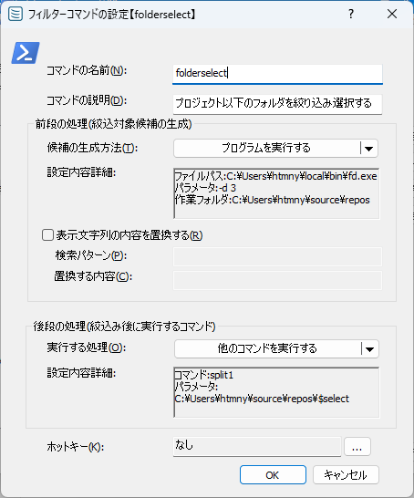
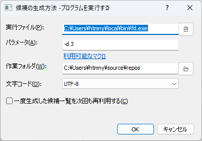
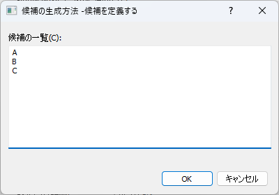
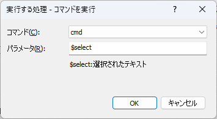
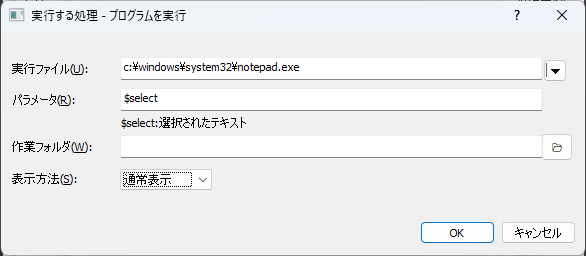
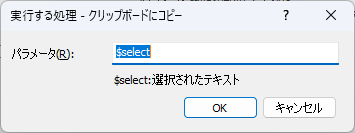

フィルタコマンド
ファジーファインダー風なことをするためのコマンド。以下のようなことを行う。
前段の処理を実行する
↓
前段の処理が標準出力に出力した内容を行単位に分けて候補とする
↓
候補の一覧を候補欄に表示する(利用者は絞り込み・選択を行う)
↓
選択した結果をもとに後段の処理を実行する

登録したコマンド名を入力欄に入力すると、外部プログラムの実行を行い、得られた出力を候補欄に表示する

コマンド名(上の例だとfolderselect)をタイプした時点で、前段の処理を実行し、候補の一覧を生成・表示する
設定画面

コマンドの名前
入力画面からコマンドを実行するためのキーワードコマンドの説明
コメント表示欄に記載される文字列。前段の処理候補の生成方法
絞り込み対象候補の生成方法を選択する。プログラムを実行する
任意のプログラムを実行し、そのプログラムの標準出力の内容を行単位で区切ったものを候補とするクリップボードの内容を使用する
コマンド実行時のクリップボードの内容を行単位で区切ったものを候補とする候補を定義する
候補とするテキストを直接定義する
表示文字列の内容を置換する
チェックすると、候補欄に表示する文字列をカスタマイズすることができる(正規表現置換)
なお、ここで置換したテキストは候補欄の表示のみに用いられる。候補の絞り込みや後段の処理には影響しない。検索パターン
正規表現の検索パターンを指定する置換する内容
置換後の文字列を指定する例:
\以降の文字列だけを表示したい場合
検索パターン:^.*\\(.*)$
置換する内容:$1
後段の処理実行する処理
候補を選択した後に実行する処理の実行方法を選択する
以下の3つから選ぶことができる
ホットキー
コマンドを呼び出すキーを設定できる。設定したキーを押下すると、コマンドを実行できる。

候補の生成方法
プログラムを実行する

実行ファイル
実行するプログラムのパスを指定するパラメータ
実行するプログラムに渡す引数を指定する作業フォルダ
実行するプログラムのカレントディレクトリを指定する文字コード
実行したプログラムが標準出力に出力したバイト列を、本アプリが文字列として解釈するときの文字コードを指定する
UTF-8またはShiftJISを選択可能一度生成した候補一覧を次回も再利用する
次回以降のコマンド実行時にプログラムを実行せずに前回の結果を再利用するかどうかを指定する。チェックした場合、候補をひとたび生成した後は再生成をしない
アプリ終了まで継続するチェックしなかった場合、候補の生成(プログラム実行)を毎回行う
候補を定義する

候補の一覧候補として表示する文字列を記述する。
上図の場合、ABCという3つの候補が表示される
実行する処理
他のコマンドを実行する

コマンド
実行するコマンドを選択するパラメータ
コマンドに渡すパラメータを指定する
$selectというキーワードを指定すると、選択した候補のテキストに置換される
プログラムを実行する

実行ファイル
実行するプログラムのパスを指定するパラメータ
プログラムに渡すパラメータを指定する
$selectというキーワードを指定すると、選択した候補のテキストに置換される作業フォルダ
実行するときのカレントディレクトリを指定する表示方法
通常表示/最大表示/最小表示 を選ぶことができる
起動するプログラムによっては指定が効かないこともある
クリップボードにコピーする

パラメータ
クリップボードにコピーするテキストの書式を指定する
$selectというキーワードを指定すると、選択した候補のテキストに置換される
制限事項
コマンドの設定次第で、候補の数が多くなる可能性がある。
その場合において、大量のデータを高速に絞り込むことを意識した実装などは全くしてないので、大量データを扱うならしかるべきツールを使うのが吉
(このコマンドはインクリメンタルな絞り込みをする手段をお手軽に提供するためのものなので..)
実行時の動作
押下キー |
動作 |
|---|---|
|
選択した候補を使って、コマンド設定で指定した後段の処理を実行する |